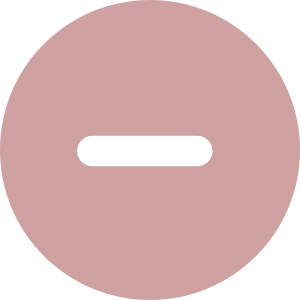

Пн-Пт: с 9:00 до 21:00; Сб-Вс: с 10:00 до 19:00.
Пн-Пт: с 9:00 до 21:00; Сб-Вс: с 10:00 до 19:00.
Пансіонати Довіра для літніх людей
по системі "ВСЕ ВКЛЮЧЕНО" 1000грн/доба


послуги
Всі послугиДогляд при деменції
Елітні будинки літніх людей
Догляд за інвалідами-колясниками
Догляд за людьми з хворобою Альцгеймера
Догляд за психічно хворими

Догляд за лежачими хворими
Догляд за літніми людим старше 80 років
Медичний догляд
Реабілітація після перелому шийки стегна
Реабілітація після інсульту
Реабілітація порушень опорно-рухового апарату
Шестиразове харчування
Будинки для літніх людей у Києві
 Найкращий вибір
Найкращий вибір
Київ, вул. Героїв небесної сотні, 150


 Найкращий вибір
Найкращий вибір
Київ, вул. Героїв небесної сотні, 150
 Найкращий вибір
Найкращий вибір
Київ, вул. Героїв небесної сотні, 150
Найкращий вибір
Київ, вул. Героїв небесної сотні, 150
Найкращий вибір
Київ, вул. Героїв небесної сотні, 150
Найкращий вибір
Київ, вул. Героїв небесної сотні, 150
Найкращий вибір
Київ, вул. Героїв небесної сотні, 150
Найкращий вибір
Київ, вул. Героїв небесної сотні, 150
Київ, вул. Героїв небесної сотні, 150
Київ, вул. Героїв небесної сотні, 150
Найкращий вибір
Київ, вул. Героїв небесної сотні, 150
Київ, вул. Героїв небесної сотні, 150
Найкращий вибір
Київ, вул. Героїв небесної сотні, 150
Найкращий вибір
Київ, вул. Героїв небесної сотні, 150
Найкращий вибір
Київ, вул. Героїв небесної сотні, 150
Наші переваги
ДІЗНАТИСЯ ВАРТІСТЬ ПРОЖИВАННЯ
Дізнатися докладніше про вартість проживання людей похилого віку в кожному пансіонаті можна в головному офісі або за допомогою онлайн-калькулятора.
Комфортні умови проживання
Чому пансіонат для літніх краще, ніж доглядальниця?
| Пансіонат | Доглядальниця | |
|---|---|---|
| Цілодобове спостереження та догляд. |  |
 |
| Підбір програми оздоровлення з урахуванням індивідуальних особливостей. | |
|
| Відстеження прийому ліків | |
|
| Регулярний контроль за станом здоров'я. | |
|
| Повноцінне та різноманітне 6-разове харчування відповідно до потреб та особливостей організму людей похилого віку. | |
|
| Годування тяжкохворих і не здатних самостійно приймати їжу людей похилого віку. | |
|
| Комфортні номери оснащені всім необхідним. | |
|
| Регулярна зміна постільної та спідньої білизни. | |
|
| Допомога у здійсненні санітарно-гігієнічного догляду. | |
|
| Спілкування з однолітками та різноманітне дозвілля (прогулянки, творчі заняття, розважальні концерти та вечори). | |
|
| Відеокамери для постійного нагляду. | |
Якими б навичками не мала доглядальниця, забезпечити цілодобовий і повноцінний догляд вона не в змозі. Наявність сторонніх у будинку вимагатиме постійного контролю з боку, є ризик, що трапиться схильна до крадіжки і людина, яка нехтує обов'язками. За відсутності медичної освіти доведеться викликати лікаря при кожному нездужання.
Платний пансіонат для літніх людей – це спеціалізований догляд у режимі 24/7. Персонал має різнобічні навички, включаючи надання невідкладної допомоги та лікування хронічних хвороб. Літнім доступні реабілітаційні програми, смачне та корисне 5-разове харчування, різноманітне дозвілля.
Розклад дня у нашому будинку для літніх людей
Як вибрати будинок для людей похилого віку в Києві та Київській області
1. Розташування. Якщо ви шукаєте будинок для людей похилого віку на довгий термін, а не на час відпустки, то найкраще при виборі пансіонату відштовхуватися від його місця розташування, щоб було зручніше добиратися.
2. Відгуки. Вивчіть відгуки в інтернеті, постарайтеся знайти реальні, у тому числі і позитивні, і негативні.
3. Особистий візит. Рекомендуємо приїхати в будинок престарілих, що сподобався, і пройтися по його кімнатах, звернути увагу на обстановку, дізнайтеся про харчування, поспілкуйтеся з постояльцями і складіть власне враження.
4. Необхідні послуги. У більшості будинків для людей похилого віку регулярно відвідують лікарі-реабілітологи, інструктори з ЛФК, психіатри. Якщо вам потрібні послуги цих фахівців, то дізнайтеся заздалегідь: чи входять вони до основного переліку, їх вартості. Можна дізнатися ПІБ лікарів і за відгуками вибрати «підшефний» пансіонат.
5. Умови проживання. Заздалегідь визначтеся як комфортніше проживатиме вашій літній людині — окремо або в компанії з одним або декількома сусідами.